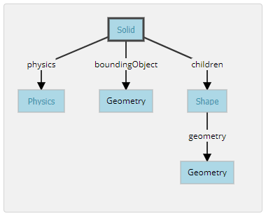
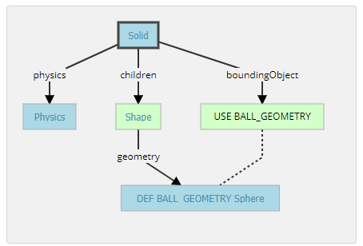

Week14 <<
Previous Next >> Note
Week15〜Week18
Week15
個人學習成果影片
個人心得：
在這幾週，我了解很多關於各繪圖軟件的發展及用途。優缺點，在NX的部分，練習很多2D輪廓的佈局，其中包含一些曲線輪廓要如何佈局。幾何特徵如何設定，使我在NX繪圖更加的了解。在模擬程序方面用了Webots.Vrep，從放置零件到參數設置，了解到要模擬程序是多麼困難，但在這幾週的例題練習，也讓我了解了兩個一個模擬程式許多。
Week16
越野車零組件設計繪圖查驗
個人心得:
這周任務是做簡化版越野車繪製及轉檔，以之前練習過的solvespace例題用過的各種指令來畫，很快速就完成了，只是在設計連結的部分思考了比較久，因為要思考後面轉檔完，如何將零件分開，讓我在這方面更了解了一些。
Week17
越野車阻尼設計
個人心得:
這幾周從越野車的設計到最後的設定過程非常繁雜，一開始要想如何設計越野車轉檔過去才不會出錯，設計完成後還要想如何組合，到最後還要設定阻尼.摩擦力.....等參數，才能讓越野車正常運，需要耗很多時間去研究才能完成。
Webots Tutorial 2 翻譯內容
A New Simulation
新的模擬
Hands-on #1: Make sure the my_first_simulation.wbt world file is open, and that the simulation is paused and is at a virtual time of 0. Using the File / Save World As... menu, save the simulation as obstacles.wbt.
操作1:將my_first_simulation.wbt文件打開，並且將模擬暫停。使用File / Save World As...，將模擬另存為obstacles.wbt。
Modifying the Floor
修改場地
Hands-on #2: To remove the RectangleArena, select it either in the 3D view or in the scene tree view with a left click and press the Delete key on your keyboard. Alternatively, you can right click on it in the 3D view and select Delete in the context menu (you can also use the context menu directly in the scene tree view). Select the TexturedBackroundLight node and click on the Add button. In the open dialog box, and choose PROTO nodes (Webots Projects) / objects / floors / Floor (Solid).
操作2：刪除原先的場地，並新增一個新場地(Floor)。
Hands-on #3: In the scene tree view select and expand the Floor. Modify the size field and set it to {1, 1} to resize it to 1mx1m.
操作3:場地尺寸設定為(1,1)且無牆壁。
The Solid Node
實體節點

A Solid node represents a rigid body, that is a body in which deformation can be neglected. The distance between any two given points of a rigid body remains constant in time regardless of external forces exerted on it. For example a table, a robot finger phalanx or a wheel are rigid bodies. Soft bodies and articulated objects are not rigid bodies. For example, a rope, a tire, a sponge or an articulated robot arm are not rigid bodies. However, an articulated entity can be broken into several rigid bodies.
The physics engine of Webots is designed for simulating rigid bodies only. An important step, when designing a simulation, is to break up the various entities into separate rigid bodies.
To define a rigid body, you will have to create a Solid node. Inside this node you will set up different sub-nodes corresponding to the characteristics of the rigid body. The following figure depicts a rigid body and its sub-nodes. The graphical representation of the Solid node is defined by the Shape nodes populating its children list. The collision bounds are defined in its boundingObject field. The graphical representation and the collision shape are often but not necessarily identical. Finally, the physics field defines if the object belongs to the dynamical or to the static environment. All these sub-nodes are optional, but the physics field needs the boundingObject to be defined.
實體節點代表一個剛體，即在其中變形可以忽略不計的主體。剛體上任意兩個給定點之間的距離在時間上保持恆定，而不管施加在其上的外力如何。例如，桌子，機械手指骨或輪子是剛體。軟體和關節物體不是剛體。例如，繩索，輪胎，海綿或關節式機械臂不是剛性體。但是，可以將一個鉸接的實體分解為幾個剛體。
Webots的物理引擎僅設計用於模擬剛體。設計仿真時，重要的一步是將各個實體分解為單獨的剛體。
要定義剛體，必須創建一個實體節點。在此節點內，將根據剛體的特性設置不同的子節點。下圖描繪了剛體及其子節點。實體節點的圖形表示由填充其列表的形狀節點定義children。碰撞範圍在其boundingObject字段中定義。圖形表示和碰撞形狀相似但不一定相同。最後，該physics字段定義對像是屬於動態環境還是屬於靜態環境。所有這些子節點都是可選的，但是physics需要boundingObject定義該字段。
Create a Ball
創建一顆球
Hands-on #4: In the scene tree view, select the last node and press the Add button. In the dialog, open the Bases nodes section and select the Solid node. In the scene tree view, expand the Solid node and select its children field. Add a Shape node to it by using the Add button. Select the appearance field of the Shape node and use the Add button to add a PBRAppearance node.
- Add a Sphere node as the
geometry field of the newly created Shape node.
- Expand the
PBRAppearance node and change its metalness field to 0 and its roughness field to 1.
- Add another Sphere node to the
boundingObject field of the Solid.
- Finally add a Physics node to the
physics field of the Solid.
- By modifying the
translation field of the Solid node, place the ball in front of the robot (at {0, 0.2, -0.2} for example).
- Save the simulation.
- The result is depicted in this figure.


操作4：在場景結構中，選擇最後一個節點，然後按Add按鈕。在對話框中，打開該Bases nodes部分，然後選擇 實體節點。在場景樹視圖中，展開實體節點並選擇其children字段，將其添加一個形狀節點。選擇形狀節點的外觀字段，然後添加一個節點PBR外觀。
- 將球體節點添加為
geometry新創建的形狀節點的字段。
- 展開
PBRAppearance節點並將其metalness字段更改為0，並將其roughness字段更改為1。
- 將另一個球體節點添加到實體節點的
boundingObject字段。
- 最後，將一個物理性質節點添加到實體節點的
physics字段中。
- 通過修改實體節點的
translation字段，將球放在機器人的前面（例如）。
{0, 0.2, -0.2}
- 保存模擬。
- 結果如圖所示。
When the simulation is started, the ball hits the floor. You can move the ball by applying a force to it (Ctrl + Alt + left-click + drag). The contact points between the ball and the floor can be displayed as cyan lines by enabling the View / Optional Rendering / Show Contact Points menu item.
當模擬開始時，球擊中地板。可以透過向球施加力來移動球（Ctrl + Alt +左鍵單擊+拖動）。通過啟用View / Optional Rendering / Show Contact Points菜單項，可以將球和地板之間的接觸點顯示為青色線。
Geometries
幾何形狀
Hands-on #5: For each Sphere node defining the ball, set its radius field to 0.05 and its subdivision field to 2. Refer to the Reference Manual to understand what the subdivision field stands for.
操作5：對於每一個球體限定球節點，其設置radius於場0.05和它的subdivision字段2。
DEF-USE Mechanism
定義使用機制
The DEF-USE mechanism allows to define a node in one place and to reuse that definition elsewhere in the scene tree. This is useful to avoid the duplication of identical nodes in world files. Moreover, it also allows users to modify several objects at the same time. Here is how it works: first a node is labeled with a DEF string. Then copies of this node can be reused elsewhere with the USE keyword. Only the fields of the DEF node can be edited, the fields of the USE inherit from the DEF node and cannot be changed. This mechanism is dependent on the order of the nodes in the world file. A DEF node should be defined before any corresponding USE node.
The two Sphere definitions that we have used earlier to define the ball, are redundant. We will now merge these two Spheres into only once using the DEF-USE mechanism.
DEF-USE機制允許在一個地方定義一個節點，並在場景結構的其他地方重複使用的定義。這對於避免在世界文件中復制相同節點很有用。此外，它還允許用戶同時修改多個對象。操作：首先用DEF字符串標記節點，然後使用USE關鍵字將該節點的副本重用於其他地方。只能編輯DEF節點的字段，USE字段的DEF節點並且不能更改。該機制取決於world文件中節點的順序。應在任何相應的USE節點之前定義DEF節點。
之前用來定義兩個球體是多餘的。將使用DEF-USE機制將這兩個Sphere合併為一次。
Hands-on #6: Select the first Sphere node (the child of the Shape) in the scene tree view. The field editor of the scene tree view allows you to enter the DEF string.
- Enter
BALL_GEOMETRY in this field.
- Select the
boundingObject field (containing the second Sphere node), and empty it by right clicking the field in the scene tree and choosing the Delete entry in the context menu that pops up.
- Then, select the
boundingObject field and click on the Add button, and select the USE / BALL_GEOMETRY in the dialog box.
- The result is shown in this figure.
操作6：在場景結構中選擇第一個球體節點。場景結構的字段編輯器輸入DEF字符串。
BALL_GEOMETRY在此字段中輸入。- 選擇
boundingObject字段（包含第二個球體節點），然後透過右鍵點擊場景結構中的字段並Delete在彈出的上下文菜單中選擇條目來將其清空。
- 然後選擇
boundingObject字段並點擊Add，然後USE / BALL_GEOMETRY在對話框中選擇。
- 結果如圖所示。
Hands-on #7: Create a second ball with the same parameters but using the Shape node (rather than the Sphere node directly) for the DEF-USE mechanism.
操作7：創建第二個球，使用相同的參數，但使用形狀節點（而不是直接使用球體節點）作為DEF-USE機制。
Add Walls
添加牆
Hands-on #8: Add four walls without physics and using only one definition of the Shape node.
操作8：添加四面牆，而不添加物理場，並且僅使用形狀節點的一個定義。
操作影片:
Week18
Week14 <<
Previous Next >> Note